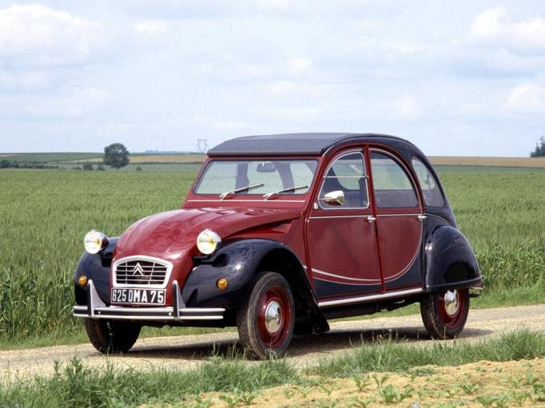
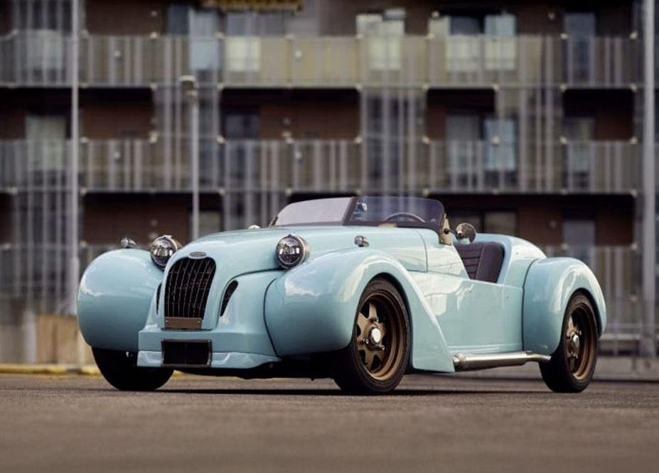
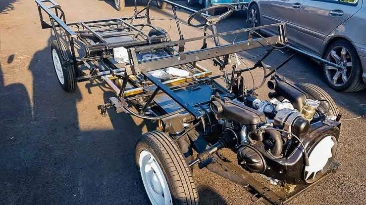
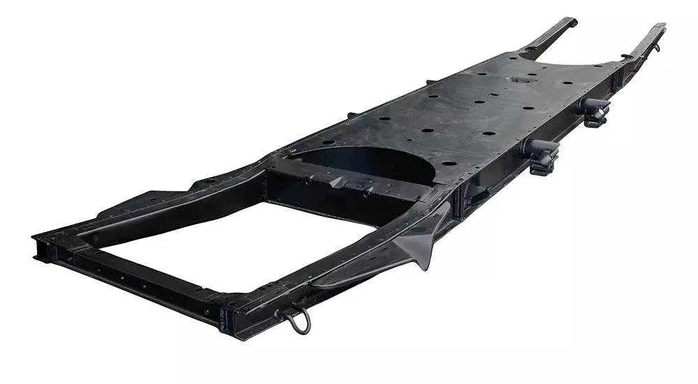
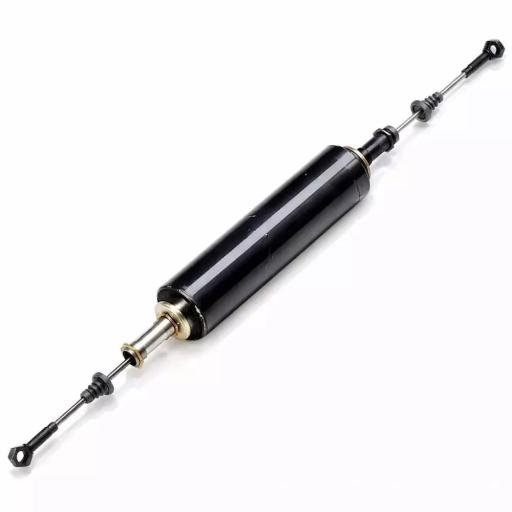
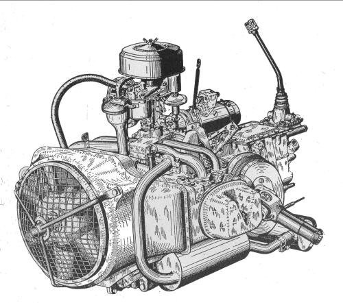
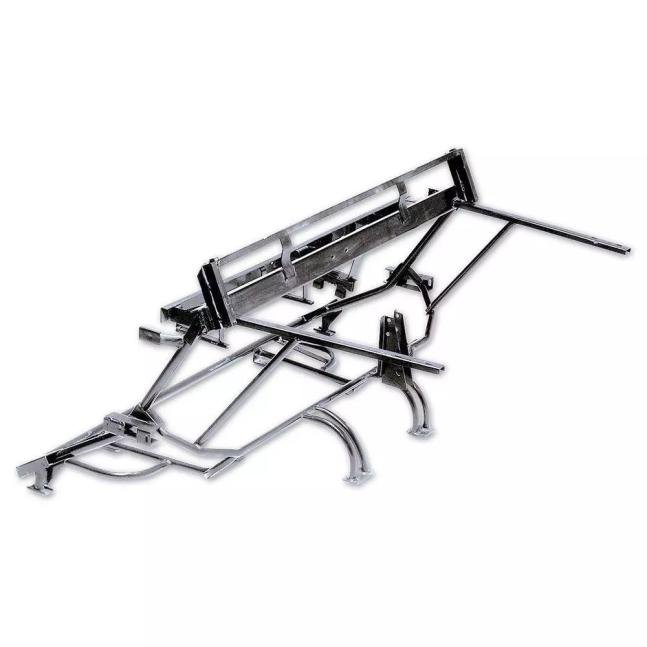
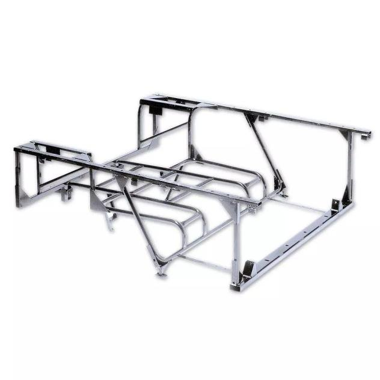
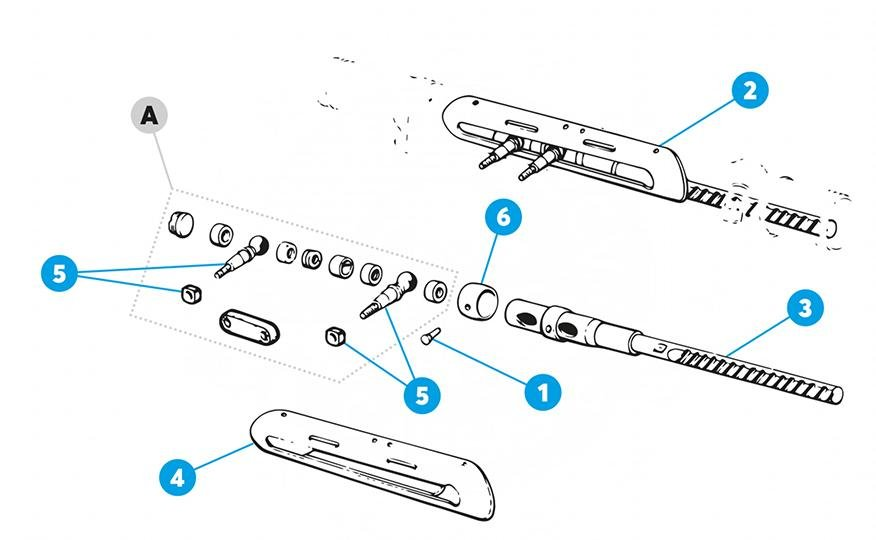

Stage d'exécution
Poste base mécanique, sur Méhari et 2CV, en binôme avec un mécanicien
À Cassis, MCC Automotive refabrique et assemble des Méhari, des 2CV et des Burton avec les outillages d'origine confiés par Citroën. J'y ai tenu pendant un mois le poste de montage de la base : je récupérais un châssis nu à l'entrepôt et je le rendais roulant, prêt à recevoir sa bassine.
- 1982 Fondation du club
- EPV Entreprise du Patrimoine Vivant
- +5 000 références de pièces
- ~8 personnes à l'atelier d'assemblage



Nomenclature du stage
Le mois
en chiffres
Ce qui est sorti de mon poste en quatre semaines, en binôme avec Thomas, mécanicien chez MCC.
La ligne de montage
Un atelier
en flux
Environ huit personnes, chacune sur un poste. Mon binôme et moi prenions le châssis préparé et le rendions roulant, avant de passer le relais pour la pose de la bassine.
Du châssis nu
à la base roulante
Tout ce qui sort de ce poste conditionne la suite de la ligne : une base mal alignée se retrouve sur la bassine et la carrosserie. L'ordre de montage est imposé par l'accès au châssis, on ne peut pas sauter d'étape.
- 01Perçage et taraudage des points de fixation sur la plateforme
- 02Traverses et quatre bras de suspension
- 03Pots de suspension horizontaux, montés en traction, et amortisseurs
- 04Freinage : tambours arrière et circuit hydraulique
- 05Préparation du moteur (allumage calé au PMH, alternateur, démarreur, admission, échappement), accouplement à la boîte puis intégration






Régler
plutôt que forcer
Sur une Méhari, la précision ne vient pas que du plan : elle est pensée pour s'ajuster au montage.
Les arceaux et les tubulaires sont des pièces mécano-soudées, donc jamais tout à fait identiques d'un exemplaire à l'autre. Leurs trous oblongs absorbent ces écarts : on prépositionne toute l'armature à blanc, on aligne, puis on fige la géométrie. L'arceau avant se règle transversalement, l'arrière longitudinalement.
Trente crémaillères
en série
Une fois par semaine environ, la base s'arrête pour produire des crémaillères de direction destinées au stock de pièces détachées. Pignon, crémaillère et bagues sont assemblés à la Loctite, qui polymérise à chaud en 15 à 20 minutes : on monte un lot pendant que le précédent sèche.
Plus le lot est grand, moins il reste de temps mort. Sur le dernier, la cadence était nettement plus soutenue qu'au départ, sans perte de qualité.

Intervention ponctuelle
Le groupe motopropulseur d'une EDEN de l'entreprise est tombé en panne. Plutôt que de puiser dans le stock neuf, on a récupéré celui d'une R-FIT inutilisée : extraction des deux groupes, remontage dans l'EDEN, et l'ancien groupe mis sur palette pour expertise.
Ce que j'en retiens
En CAO, les pièces sont parfaites et les assemblages tombent juste. En atelier, une partie de la précision se gagne sur la ligne, par le geste et le jugement du mécanicien. J'ai aussi compris qu'un savoir-faire se transmet d'abord en regardant faire, et que noter chaque soir ce qu'on a monté fait gagner beaucoup de temps ensuite.
Perçage, taraudage, suspension, accouplement moteur et boîte, production en série, travail en flux